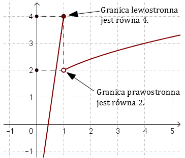

Granice jednostronne funkcji
Już w poprzednim rozdziale podaliśmy definicję
granicy lewostronnej i prawostronnej. Teraz przypomnimy obie definicje w nieco uproszczonej postaci:
Definicja granicy lewostronnej
Granicą lewostronną funkcji \(f(x)\) w punkcie \(x_0\) jest liczba
\(g\): \[\lim_{x \to {x_0}^{-}}f(x)=g \] jeżeli dla każdego ciągu \((x_n)\) zbieżnego do \(x_0\)
z lewej strony, ciąg \((f(x_n))\) jest zbieżny do \(g\).
Definicja granicy prawostronnej
Granicą prawostronną funkcji \(f(x)\) w punkcie \(x_0\) jest liczba
\(g\): \[\lim_{x \to {x_0}^{+}}f(x)=g \] jeżeli dla każdego ciągu \((x_n)\) zbieżnego do \(x_0\)
z prawej strony, ciąg \((f(x_n))\) jest zbieżny do \(g\).
Zbadaj granicę funkcji \(f(x)=\begin{cases} 7x-3\quad
\text{dla } x\le 1\\ \sqrt{x}+1 \quad \text{dla } x\gt 1 \end{cases} \) w punkcie \(x =
1\).
Dla ułatwienia rysujemy wykres funkcji \(f(x)\):  Granica funkcji \(f(x)\) w punkcie \(x = 1\) nie
istnieje, ponieważ granice lewostronna i prawostronna przyjmują różne wartości: \[\begin{split}
&\lim_{x \to 1^{-}}f(x)=\lim_{x \to 1^{-}}(7x-3)=7\cdot 1-3=4\\[6pt] &\lim_{x \to
1^{+}}f(x)=\lim_{x \to 1^{+}}(\sqrt{x}+1)=\sqrt{1}+1=2 \end{split}\]
Przydatny fakt
Jeżeli funkcja \(f(x)\) jest ciągła w punkcie \(x_0\), to: \[\lim_{x \to x_0^-}f(x)=\lim_{x \to x_0^+}f(x)=f(x_0)\] Zbadaj granicę funkcji \(f(x)=\frac{|x+7|}{x-3} \) w
punkcie \(x = -7\).
Dziedziną funkcji \(f(x)\) jest \(\mathbb{R} \backslash
\{3\}\). Zatem funkcja \(f(x)\) jest ciągła dla argumentu \(x=-7\). Czyli w tym punkcie granice
lewostronna jest równa granicy prawostronnej: \[\lim_{x \to -7^{-}}f(x)=\lim_{x \to
-7^{+}}f(x)=f(-7)=\frac{|-7+7|}{-7-3}=\frac{0}{-10}=0\] Oto wykres funkcji \(f(x)\) i ilustracja
ciągłości funkcji w \(x=-7\) oraz istnienie granicy: 
Zbadaj granicę funkcji \(f(x)=\frac{|x+7|}{x-3} \) w
punkcie \(x = 3\).
Przykład bardzo podobny do poprzedniego, tylko tym razem musimy
zbadać granicę w punkcie \(x=3\), czyli w punkcie nieciągłości funkcji.
W takiej sytuacji zawsze oddzielnie liczymy granicę lewostronną: \[\lim_{x \to 3^{-}}f(x)=\lim_{x \to 3^{-}}\frac{|x+7|}{x-3}=\frac{10}{0^-}=-\infty \] i prawostronną: \[\lim_{x \to 3^{+}}f(x)=\lim_{x \to 3^{+}}\frac{|x+7|}{x-3}=\frac{10}{0^+}=+\infty \] Zatem granica funkcji \(f(x)\) w punkcie \(x=3\) nie istnieje, ponieważ granice lewostronna i prawostronna są różne.
W takiej sytuacji zawsze oddzielnie liczymy granicę lewostronną: \[\lim_{x \to 3^{-}}f(x)=\lim_{x \to 3^{-}}\frac{|x+7|}{x-3}=\frac{10}{0^-}=-\infty \] i prawostronną: \[\lim_{x \to 3^{+}}f(x)=\lim_{x \to 3^{+}}\frac{|x+7|}{x-3}=\frac{10}{0^+}=+\infty \] Zatem granica funkcji \(f(x)\) w punkcie \(x=3\) nie istnieje, ponieważ granice lewostronna i prawostronna są różne.
Wyliczanie granic jednostronnych funkcji w punktach nieciągłości daje nam
kolejną informację o wykresie funkcji i ułatwia rysowanie: